|
Wheels, Life and other Mathematical Amusements
Martin Gardner
ISBN 0-7167-1589-9
(1983)
Collection of interesting mathematical puzzles. |
| 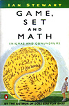 |
Game Set and Match
Ian Stewart
ISBN 0-14-013237-6
(1989)
Collection of topology, game and fractal puzzles. |
 |
Chance and Chaos
David Ruelle
ISBN 0-14-017108-8
(1991)
Exploration of chaos, turbulence and game theory. |
| 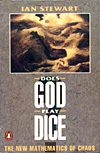 |
Does God Play Dice
Ian Stewart
ISBN 0-14-012501-9
(1991)
The mathematics of chaos; pendulums, strange attractors
and the texture of reality. |
 |
The Chaos Cookbook
Joe Pritchard
0-7506-0304-6
(1992)
In depth mathematical program listings in BBC basic and
Turbo Pascal. |
| 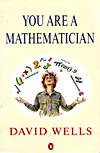 |
You Are A Mathematician
David Wells
ISBN 0-14-017480-X
(1995)
A wealth of mathematical diversions; patterns, games and
topology. |
 |
The Magical Maze
Ian Stewart
ISBN 0-471-35065-6
(1997)
Journey through varied mathematical ideas; slime mould
and Turings train set. |
| 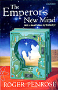 |
The Emporer's New Mind
Roger Penrose
ISBN 0-19-286198-0
(1999)
Exploration of artificial intelligence, computers and
the human mind. |
| 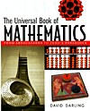 |
The Universal Book Of Mathematics
David Darling
ISBN 0-7858-2297-6
(2004)
Dictionary of mathematical terms, puzzles and numbers. |
| 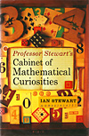 |
Cabinet of Mathematical Curiosities
Ian Stewart
ISBN 1-84668-064-9
(2008)
Wide range of short maths puzzles and ideas. |
|
| 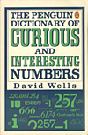 |
Curious and Interesting Numbers
David Wells
ISBN 0-14-008029-5
(1986)
Count through of all interesting numbers. |
 |
Islands Of Truth
Ivars Paterson
ISBN 0-7167-2148-1
(1990)
A mathematical mystery cruise; curves, packing and chaos. |
| 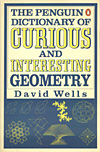 |
Curious and Interesting Geometry
David Wells
ISBN 0-14-011813-6
(1991)
Collection of geometrical gems; shapes, figures, objects
and patterns. |
| 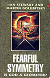 |
Fearful Symmetry
Ian Stewart
ISBN 0-14-013047-0
(1992)
The mathematics of chaos; geometry, natural patterns
and evolution. |
| 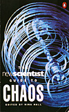 |
Guide to Chaos
Many authors
ISBN 0-14-014571-0
(1992)
A collection of easy to read essays exploring a variety of chaos concepts. |
| 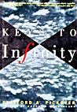 |
Keys To Infinity
Clifford A Pickover
ISBN 0-471-11857-5
(1995)
Various essays and explorations on numbers and number theory with program codes (C, Basic). |
| 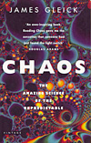 |
Chaos
James Gleick
ISBN 0-7493-8606-1
(1997)
Exploration of chaos and fractal worlds. |
 |
The Art of the Infinite
Robert Kaplan
ISBN 0-713-99629-3
(2003)
Mathematical procedures and numbers. |
 |
The Book Of Numbers
John H Conway
ISBN 0-
(199)
The history and mathematical facination of numbers. |
| 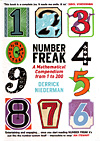 |
Number Freak
Derrick Niederman
ISBN 978-0715637104
(2009)
Count through of interesting numbers. |
|